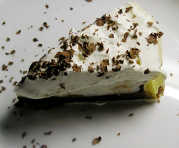

Chocolat Coconut Pie
5 von 6Preheat oven to 350 degrees F (175 degrees C). Bake crust for 15 minutes, or until golden brown. In a medium saucepan, whisk together 1 cup milk, 450 ml coconut milk and 1 cup sugar. In a separate bowl, dissolve 1/2 cup cornstarch in 1 cup water. Bring coconut mixture to a boil. Reduce to simmer and slowly whisk in the cornstarch. Continue stirring mixture over low heat until thickened. In a small sauce pan over slow fire, melt 200 gr chocolate for 1 minute or until melted. Reserve 1/2 of the coconut mixture. Mix remaining half with the melted chocolate and pour in bottom of pie crust; pour reserved half on top of chocolate layer. Cover and refrigerate for about an hour. Whip 1 1/2 whipping cream with 1/4 cup sugar until stiff peaks form. Layer the cream on pie; if desired garnish with chocolate shavings.
*Best if it refrigerates over night to completely firm.
